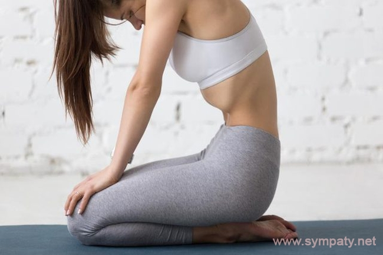

Вакуум для живота
Вакуум для живота — упражнение, рекомендуемое к выполнению мужчинам и женщинам, стремящимся уменьшить свои объемы талии. Оно представляет собой максимальное втягивание живота внутрь и задержку в этом положении на минуту-другую, при этом мы на задерживаем дыхание, а продолжаем дышать в обычном режиме. В нашей сегодняшней статье мы рассмотрим, как делать упражнение вакуум живота.
Польза вакуума живота заключается в том, что за счёт статического удержания живота в втянутом положении, мы можем постепенно уменьшать объём живота и талии. Разумеется, при соблюдении низкоуглеводной диеты и регулярных тренировках.
Вакуум пресса, как упражнение, удобен тем, что его можно делать абсолютно везде, для его выполнения не требуется абсолютно никакого дополнительного оборудования. Выполняйте это упражнение на работе, на учебе, в машине, в общественном транспорте… Стоя или сидя, более продвинутые варианты – лежа и стоя на четвереньках.
Как правильно выполнять:
Как и в любом упражнением, подразумевавшим статическое напряжение мышц и полную концентрацию над биомеханикой движения, результат на 100% зависит от соблюдения правильной техники. Если техника выполнения вакуума живота не отточена до филигранности, вряд ли Вам удастся извлечь из данного упражнения максимум пользы.
- Займите правильную исходную позицию: встаньте или сядьте на устойчивую поверхность
(можете встать на четвереньки для большего контроля, этот вариант немного сложнее для начинающих
атлетов, но чрезвычайно эффективен), взгляд направьте вперёд, спину держите прямой на протяжении всего
подхода.
- Сделайте глубокий вдох, настолько глубокий, насколько это возможно, одновременно с этим втяните
живот.
Чтобы Вам было проще визуализировать данный процесс, представьте, будто Вы хотите пупком достать до
позвоночника, зажав внутренние органы где-то по середине, а сам живот «засунуть» под рёбра.
- Как только Вы втянули живот, насколько это возможно, сделайте плавный выдох и продолжайте дышать
в обычном режиме, но при этом не забывайте держать живот втянутым. Звучит элементарно, однако
попробуйте и убедитесь, что на практике все гораздо сложнее – правильное выполнение вакуума тоже требует
не мало времени и усилий.